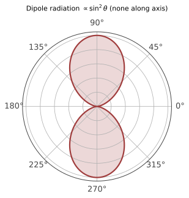

本页目录
电磁 III · 场的能量、动量与辐射入门
对标：Griffiths §8、§11 入门 ｜ 前置：em-01/02 本页给"场是实在的"补齐力学证据：场携带能量（Poynting 定理）与动量（辐射压），并回答一个改变世界的问题——加速电荷为什么辐射（Larmor 公式）。这是本科电磁的收官，也是天线、同步辐射与"经典原子必塌缩"悖论（量子力学的引信）的出发点。
学习层：先核对 E/B/S 方向，再问远场功率
实验分成两个模式，但共享同一条审计顺序：先确认局部场的方向关系，再确认能流是瞬时还是时间平均，最后才把球面通量解释成辐射功率。脚本采用归一化 \(c=\varepsilon_0=\mu_0=1\)，只为把方向和量纲账看清楚。
1. 平面波：\(\mathbf E\)、\(\mathbf B\)、\(\mathbf k\) 与 Poynting 矢量
对无源均匀介质中的线性平面波，
所以 \(\mathbf E\perp\mathbf B\perp\mathbf k\)，且 \(\langle\mathbf S\rangle\) 与 \(+\mathbf k\) 同向。瞬时场若写成 \(\cos(\omega t-\mathbf k\cdot\mathbf r)\)，瞬时 \(\mathbf S\) 还带 \(\cos^2\)；相位为 \(\pi/2\) 的某一时刻可以有瞬时能流为零，但一个周期平均的能流仍非零。反向 \(\mathbf B\) 即使偶然保留 \(|E|/(c|B|)=1\)，也会把能流翻向 \(-\mathbf k\)，不能只验振幅比。
2. 短电偶极：角分布与三个空间区域
令点偶极源 \(\mathbf p(t)=p_0\cos(\omega t)\hat{\mathbf z}\)，且源尺寸远小于波长、运动非相对论。辐射区的远场满足
沿偶极轴 \(\theta=0\) 不辐射，赤道面最强；积分 \(\int\sin^2\theta\,d\Omega=8\pi/3\) 才得到总功率。这个 \(P\propto\omega^4\) 只在固定 \(p_0\)、短偶极、非相对论、谐稳态这些条件同时成立时使用，不能推出笼统的“频率越高，任意短波天线越高效”。真实天线效率还受尺寸与波长的比例、阻抗匹配、导体损耗、介质损耗、馈电和带宽影响。
区域也必须分账：源本身的有限尺寸与电流分布不由点偶极远场式解决；源附近 \(kr\ll1\) 有 \(1/r^3\)、\(1/r^2\) 的近场/反应性项，能量可以在场和源之间往返；辐射区 \(kr\gg1\) 才由 \(1/r\) 项主导，球面上的周期平均径向通量稳定地给出净辐射功率；\(kr\approx1\) 是过渡区，不能硬套纯远场方向图。
3. 预测门与静态后备
先回答当前模式的能流方向、偶极轴向节点、可以读取净辐射的区域和 \(\omega\) 幂律。提交前不显示方向图、数值或账本；切换模式、预设、相位、观察角或 \(kr\) 会重新上锁。
无 JavaScript 时的静态读法：默认平面波取 \(\mathbf E=\hat x\)、\(\mathbf B=\hat y\)、\(\mathbf k=\hat z\)，因此 \(\mathbf E\times\mathbf B=+\hat z\)，周期平均值比相应峰值小一半。偶极默认 \(\theta=60^\circ\)、\(kr=8\)，已进入本实验的辐射区教学阈值；\(\sin^2\theta=3/4\)，但轴向 \(\theta=0\) 的功率为零。下面的账本明确写出近场不能直接当净辐射。
| 对象 | 解析读数 | 条件/边界 |
|---|---|---|
| 正确平面波 | \(\mathbf B=\hat k\times\mathbf E/c\)，\(\langle\mathbf S\rangle\parallel+\mathbf k\) | 无源平面波；时间平均取一个完整周期 |
| \(B\) 反向预设 | \(\lvert E\rvert/(c\lvert B\rvert)\) 可仍为 1，但 \(\mathbf E\times\mathbf B\parallel-\mathbf k\) | 方向账失败，不能用振幅比掩盖 |
| 偶极方向图 | \(dP/d\Omega\propto\sin^2\theta\)，\(P_{\rm rad}=p_0^2\omega^4/(12\pi\varepsilon_0c^3)\) | 固定 \(p_0\)、短偶极、非相对论、谐稳态 |
| 近场/源附近 | \(1/r^3,1/r^2\) 项可见，能量可返回源 | 不把瞬时 \(S\) 或局部储能全叫作辐射功率 |
| 辐射区 | \(1/r\) 项主导，\(\langle\mathbf S\rangle\simeq\langle S_r\rangle\hat r\) | \(kr\gg1\)，球面通量才给净远场辐射 |
微波炉和手机的频率例子也不能被压成“频率高/低”的二分：微波炉主要涉及金属腔体、门缝/网孔的电磁屏蔽和波导截止，以及食物材料的介电损耗；手机能否穿墙还取决于波长相对孔隙的尺度、墙体介电常数与电导率造成的反射/吸收、天线和链路预算。它们不是由本节的点偶极 \(\omega^4\) 式单独决定的。
静态读法提示：脚本失效时，先按右手定则检查 E/B/S，再检查源尺寸、\(kr\) 区域和时间平均条件，最后使用偶极角分布与功率式；不要把近场反应性能量或真实天线效率混入远场 \(P_{\rm rad}\)。
1. Poynting 定理：场的能量记账
定理【推导】 从 Lorentz 力对电荷做功率 \(\mathbf J\cdot\mathbf E\) 出发，用 Ampère–Maxwell 消 \(\mathbf J\)、矢量恒等式 \(\nabla\cdot(\mathbf E\times\mathbf B) = \mathbf B\cdot(\nabla\times\mathbf E) - \mathbf E\cdot(\nabla\times\mathbf B)\) 与 Faraday：
读法：连续性方程（与电荷守恒同型——"守恒律的标准长相"：密度 + 流 + 源汇）：\(u\) = 场的能量密度、\(\mathbf S\)（Poynting 矢量）= 能流密度、右端 = 场与物质的能量交换。能量在场中流动：给电阻供能的能量从导线侧面的场流入（算例经典【引用 Griffiths §8.1】）——颠覆"能量在电线里跑"的直觉。
2. 场的动量与辐射压
场还带动量：\(\mathbf g = \varepsilon_0\,\mathbf E\times\mathbf B = \frac{\mathbf S}{c^2}\)（动量密度）【骨架】（对 Lorentz 力密度做与 §1 平行的记账，应力张量 \(T_{ij}\) 携带动量流【引用 §8.2】）。
辐射压：电磁波打在吸收面上 \(P = \frac{I}{c}\)（反射加倍）——阳光 \(\sim 5\ \mu\mathrm{Pa}\)：微小但真实（彗尾方向、太阳帆、光镊的原理——光镊已是诺奖级实验室日常）。光子语言预告：\(E = pc\) 的经典对应（sr-01 四动量、atom-01 光电效应两处收线）。
3. 辐射：加速电荷发光

物理图像：匀速电荷的场"跟着走"（无辐射——洛伦兹变换到静止系即静电场，sr-01 呼应）；加速时场线来不及调整，"扭结"以光速向外传播——这圈扭结就是辐射（Thomson 的图像论证：扭结区场的横向分量 \(\propto \frac{1}{r}\) 而非静电的 \(\frac{1}{r^2}\)——只有 \(\frac1r\) 场能把能量带到无穷远：\(S \propto E^2 \propto \frac{1}{r^2}\) 乘以球面 \(r^2\) 不衰减）。
Larmor 公式【骨架】（非相对论）：
（量纲 + \(\frac1r\) 场论证定形，系数由偶极辐射的角分布积分——完整推导在 ced-02 推迟势之后。）辐射功率 \(\propto\) 加速度平方。
三个立即的物理：
- 短偶极模型下的频率缩放：在固定 \(p_0\)、短偶极、非相对论、谐稳态条件下 \(p_0\sim qx_0\)，所以 \(P \propto \omega^4\)；这不是任意真实短波天线“更高效”的定理，尺寸、匹配和损耗仍需单独核对；
- 瑞利散射 \(\propto \omega^4\)：束缚电子被阳光驱动再辐射——蓝光散射强于红光 16 倍：天空为什么蓝、夕阳为什么红，一个幂律的功劳；
- 经典原子的死刑判决：绕核电子向心加速 ⇒ 持续辐射 ⇒ 能量流失 ⇒ 轨道塌缩（估算寿命 \(\sim 10^{-11}\) s【引用】）——经典物理自己证明了自己在原子尺度必须让位：量子力学（qm-01）的引信在此点燃。
4. 练习与要点
例 1（Poynting 流向亲算） 充电中的平板电容：\(\mathbf E\) 轴向增长、边缘 \(\mathbf B\) 环向（位移电流的 Ampère 环）⇒ \(\mathbf S = \frac{\mathbf E\times\mathbf B}{\mu_0}\) 指向内部——能量从侧面流入填充场能 \(\frac{\varepsilon_0E^2}{2}\)，记账严丝合缝（做一遍这道题，场的实在感落地）。
例 2（辐射压数量级） 100 kW 激光聚焦 1 g 反射帆：\(F = \frac{2P}{c} \approx 0.67\ \mathrm{mN}\)，\(a \approx 0.67\ \mathrm{m/s^2}\)——激光推进的可行性一算便知（突破摄星计划的物理底账）。
例 3（频率、屏蔽与材料的综合判断） 微波炉的“辐射不逃逸”主要由金属腔体、门缝/网孔的尺度与波导截止、以及门封结构决定；手机穿墙则要同时看波长相对墙体孔隙的尺度、墙体的介电常数与电导率引起的反射/吸收、天线和链路预算。不能把二者归结为一个 \(\omega^4\) 幂律或“高频必被网孔挡住、低频必穿透”的二分。\(\blacksquare\)
电磁三页完卷。下一页：把"光速对谁都一样"当公理会发生什么——狭义相对论：时空的重新装配。